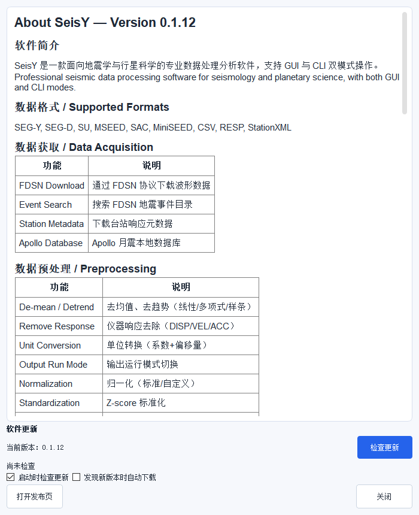

附录
完整菜单索引
下表由程序在运行时读取菜单栏自动生成，与软件里看到的完全一致（共 117 项）。
按 Ctrl+F 或手册左上角的搜索框可以按名称查找。
为什么要有这张表
SeisY 的功能分布在 9 个顶级菜单、47 个数据菜单项里。很多功能不在工具栏上，
「知道有这个东西但找不到在哪」是新手最常见的卡点。这张表就是用来查路径的。
文件（12 项）
| 菜单路径 |
| 导入文件 |
| 用编辑器打开文件 |
| 打开云记编辑器 |
| 配置文件 › 设置工作目录 |
| 配置文件 › 加载配置 |
| 配置文件 › 更新配置 |
| 保存数据 |
| 保存项目 |
| 保存项目为 |
| 打开项目 |
| 导出 › 导出事件列表 |
| 退出 |
编辑（6 项）
数据（47 项）
| 菜单路径 |
| 下载地震数据 |
| 数据查看器 |
| 勘探地震 › 正演模拟 |
| 勘探地震 › 炮集浏览 |
| 勘探地震 › 处理工作流 |
| 预处理 › 去均值 |
| 预处理 › 去趋势 › 去趋势 |
| 预处理 › 去趋势 › 多项式去趋势 |
| 预处理 › 去趋势 › 多项式去趋势绘图 |
| 预处理 › 去趋势 › 样条去趋势 |
| 预处理 › 去趋势 › 样条去趋势绘图 |
| 预处理 › 去除仪器响应 |
| 预处理 › 输出运行模式 |
| 预处理 › 单位转换 |
| 预处理 › ATT时间矫正 |
| 预处理 › 自定义去趋势 |
| 预处理 › 归一化 |
| 预处理 › 自定义归一化 |
| 预处理 › 标准化 |
| 预处理 › 共轭 |
| 预处理 › 反转 |
| 预处理 › 平滑 |
| 预处理 › 去噪 |
| 阿波罗数据缺失值插值 › 线性 |
| 阿波罗数据缺失值插值 › 最近邻 |
| 阿波罗数据缺失值插值 › 多项式 |
| 阿波罗数据缺失值插值 › Spline |
| 阿波罗数据缺失值插值 › 重心 |
| 阿波罗数据缺失值插值 › 克罗格 |
| 阿波罗数据缺失值插值 › 分段多项式 |
| 阿波罗数据缺失值插值 › 分段三次Hermite插值 |
| 阿波罗数据缺失值插值 › Akima样条 |
| 阿波罗数据缺失值插值 › 三次样条 |
| 加窗 › 汉明窗 |
| 加窗 › 汉宁窗 |
| 加窗 › 布莱克曼窗 |
| 加窗 › 矩形窗 |
| 加窗 › 巴特利特窗 |
| 加窗 › 平顶窗 |
| 加窗 › 绘制窗函数 |
| 滤波 › 滤波 |
| 滤波 › 中值滤波 |
| 滤波 › 修改中值滤波窗口大小 |
| 去脉冲并绘图 |
| GDCST 滤波 |
| 地震数据相关性分析 |
| 地震数据稀疏化 |
绘图（10 项）
| 菜单路径 |
| 自定义采样绘图 |
| 勘探地震模式（单画布） |
| 旋转炮集方向（道集横/纵） |
| 绘制振幅谱 |
| 绘制多通道振幅谱 |
| 绘制时域与振幅谱 |
| 导出当前频谱到文件 |
| 发送频谱到简正模工作台 |
| 频谱分析查看器 |
| 切换频谱方法 (FFT/CZT) |
工具（18 项）
| 菜单路径 |
| AI 助手 |
| SeisRT 在线工具 |
| 震源定位器 |
| 行星台站地图 |
| 3D月球地质图 |
| 地质图图例 |
| 射线追踪工作台 |
| 月震工作流 |
| 仪器响应管理器 |
| 阿波罗系统 |
| Apollo 数据质量浏览器 |
| 月震扫描器 |
| 修复库对比查看器 |
| ULF-VLSNR-SE 重构器 |
| 噪声提取器 |
| 波形道合并工具 |
| 滑动相关分析器 |
| 批处理工作流 |
模拟（3 项）
| 菜单路径 |
| 射线追踪工作台 |
| 简正模工作台 |
| 模型设计器 |
设置（11 项）
| 菜单路径 |
| 选项 |
| 绘制频谱设置 |
| 天体地图设置 |
| 设置阿波罗数据库路径 |
| 主题 › 默认模式 |
| 主题 › 亮色模式 |
| 主题 › 暗色模式 |
| 主题 › 自定义模式 |
| 语言 › 简体中文 |
| 语言 › English |
| 显示内存使用情况 |
网络资源（5 项）
| 菜单路径 |
| 打开Wilber 3 |
| 打开谷歌地图 |
| 打开SAGE工具 |
| 打开地震台网列表 |
| 打开地学网站列表 |
帮助（5 项）
| 菜单路径 |
| 使用指南 / User Guide |
| 去脉冲帮助 |
| 插值帮助 |
| 检查更新 |
| 关于 |
常用快捷键
| 快捷键 |
作用 |
/ |
在本手册中聚焦搜索框 |
Ctrl+S |
保存当前数据 |
Ctrl+O |
打开文件 |
Ctrl+Z / Ctrl+Y |
撤销 / 重做上一步处理 |
| 画布上的滚轮 |
缩放 |
| 画布上拖动 |
平移 |
| 画布上框选 |
选中区域后绘制该区域的频谱 |
常见报错对照
| 提示 |
原因 |
处理 |
No data loaded |
没有选中事件，或事件里没有波形 |
在事件列表里单击事件 |
No stream is loaded. |
当前工作流为空 |
先导入或下载数据 |
Event not found: |
事件 ID 不存在（可能已被删除） |
刷新事件列表 |
Missing output path. |
导出时没给目标路径 |
在对话框里选择保存位置 |
Selected items do not contain stream data. |
选中的是分组节点而不是事件 |
展开分组，选具体事件 |
| 去响应后振幅异常放大 |
低频噪声被反卷积放大 |
提高预滤波 f1，或提高水位值 |
关于

关于 SeisY
帮助 › 关于 显示版本号、构建信息与第三方组件许可。
反馈问题时请附上这个版本号——不同版本的界面和参数名会有差异。
帮助 › 检查更新 会读取官方发布页的最新版本号并对比。